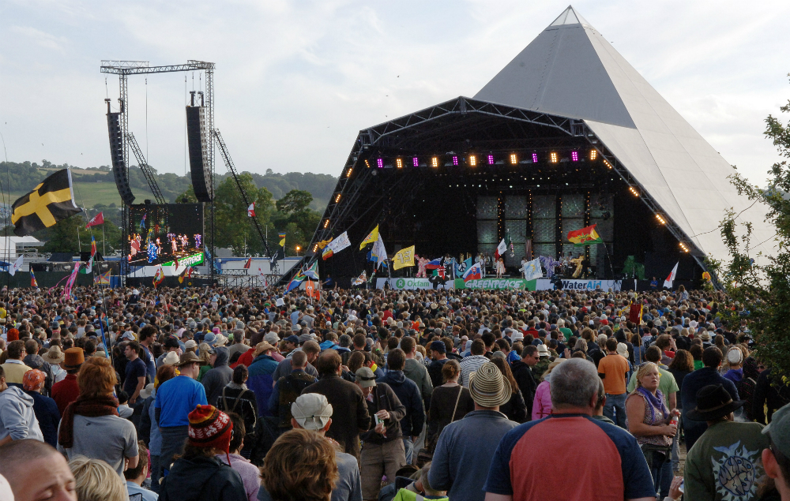

Welcome to the Glastonbury music festival!
Glastonbury Festival is a five-day festival of contemporary performing arts that takes place in Pilton, Somerset, England. As well as music, the festival hosts dance, comedy, theatre, circus, cabaret, and other arts. Leading pop and rock artists have headlined, alongside thousands of others appearing on smaller stages and performance areas. Films and albums have been recorded at the festival, and it receives extensive television and newspaper coverage.
